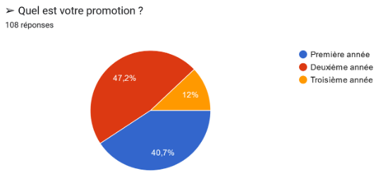
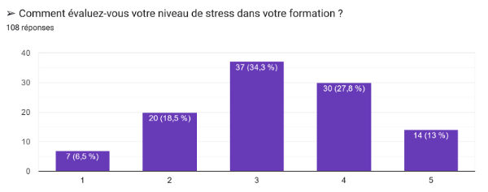
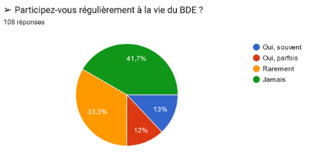
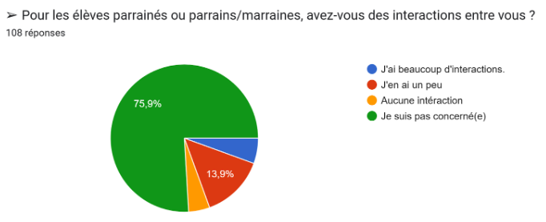
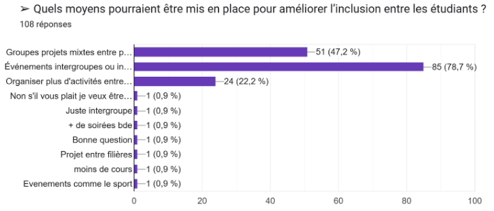

Le bien être des étudiants au cœur de nos valeurs
Introduction
La vie étudiante est une période précieuse offrant des opportunités à la fois
académiques et humaines. Elle se vit à travers les cours, les activités organisées mais aussi
les liens qui se créent entre les étudiants.
Cependant, au sein du BUT Informatique, elle ne semble pas répondre aux attentes,
ne permettant pas aux étudiants de vivre pleinement ces opportunités. En effet, une
absence d’inclusion entre les promotions a été constatée, et un manque d'activité par le
Bureau Des Etudiants (BDE) a souvent été cité.
Pour remédier à cette situation et améliorer les conditions de la vie étudiante, nous
avons créé et partagé un questionnaire afin de recenser l'avis de chacun. Celui-ci vise à
améliorer et organiser le quotidien via les propositions formulées par les élèves eux-mêmes.
Pour cela, nous avons axé notre questionnaire sur trois aspects de la vie étudiante :
- Son impact sur la vie personnelle, regroupant ainsi le bien-être étudiant en dehors
des cours ;
- L’impact des activités organisées par le Bureau Des Étudiants sur le bien-être des
étudiants ;
- L’inclusion de chaque promotion ou groupe d’études et la création de liens entre
les élèves.
Nous constatons qu’il y a une majorité d’hommes qui ont répondu et surtout des première et
deuxième années.

Première partie : L’impact de la vie étudiante sur la vie personnelle
L’un des aspects fondamentaux de la vie étudiante est l’équilibre entre les
études et
la vie personnelle. Un travail efficace est certes important, mais celui-ci ne doit pas trop
déborder sur la vie personnelle des étudiants qui dans ce cas là pourrait nuire directement
aux études.
Sur ce graphique nous voyons que malheureusement le débat est présent. Les avis
sont mitigés sur le temps. Est-il réellement suffisant pour permettre aux étudiants de
vraiment pouvoir s’épanouir ? Même si en effet on voit que plus de la moitié trouve que la
formation laisse le temps une partie non négligeable pensent le contraire et nous contraint à
se poser la question des solutions à apporter pour soulager les étudiants.
Sur ce second graphique demandant le niveau de stress des étudiants. Avec 34,3% à une valeur de 3 et 27,8% au niveau 4 on comprend que le stress des étudiants est trop élevé que très peu ont un niveau de stress au plus faible. Le stress est un véritable fardeau, en effet celui-ci est un cercle vicieux pour nos étudiants: au moins l’élève est à l'aise, au plus cela lui procurera des effets néfastes à son bien être.
Enfin, ce dernier graphique montre que les étudiants sont majoritairement d’accord sur le fait que la vie étudiante a un impact sur leur bien-être. En effet, 70,4% des étudiants pensent que la vie étudiante a un impact sur leur bien-être. Cela montre que la vie étudiante est un élément important pour les étudiants et qu’il est nécessaire de l’améliorer pour leur bien-être.
Deuxième partie : L’impact des activités et événements du BDE
Le Bureau des Étudiants (BDE) joue un rôle essentiel dans l’animation de la vie
universitaire. Cette section du questionnaire évalue la participation des étudiants aux
activités proposées ainsi que les activités disponibles.
Nous pouvons voir qu’une majorité d’étudiants ne participe pas régulièrement à la vie
du BDE, 75% affirment ne jamais ou rarement y participer. Ils affirment ne pas y participer à
57% à cause du manque d'intérêt des activités et à 51% à cause de l’incompatibilité des
horaires.
Troisième partie : L’inclusion entre promotions et la création de liens
Un autre élément clé est que l'environnement universitaire repose aussi sur l’intégration des étudiants et la cohésion entre les promotions et les groupes de travail. Cette section du questionnaire visait à évaluer cet aspect. Ainsi, nous avons demandé à chaque étudiant s’il se sentait inclus au sein de son propre groupe ou promotion. Sur cent huit réponses, quarante-quatre personnes se sentent bel et bien incluses au sein de leur promotion ou de leur groupe contre seulement huit personnes. Nous pouvons ainsi constater que, globalement, les étudiants ne ressentent aucun mal-être dans la création de liens dans les groupes. * Par la suite, nous avons questionné les étudiants sur leurs intéractions avec les autres groupes ou promotions d’étudiants du département Informatique. Ici, les avis tendent sur une inclusion dépendant des personnes, avec 65% des réponses.  Par la suite, nous avons questionné les étudiants sur leurs intéractions avec les autres groupes ou promotions d’étudiants du département Informatique. Ici, les avis tendent sur une inclusion dépendant des personnes, avec 65% des réponses. Enfin, concernant le système de parrainage, nous avons demandé si les parrains et les filleuls avaient des interactions entre eux. Nous constatons que le système de parrainage ne concerne que peu de personnes, avec 75% de gens n’étant pas concernés par ce système. Pour les 25% restants, seulement 13% trouvent avoir un peu d'interaction avec leur parrain ou leur filleul. Cela témoigne d'un manque d'intérêt pour ce système mis en place pour l'inclusion et l'aide par les deuxièmes et troisièmes années envers les premières années.. Afin d'améliorer l'inclusion dans sa généralité, que ce soit simplement au sein des
groupes, entre les promotions, ou davantage avec le parrainage, nous avons demandé aux
étudiants de nous proposer des activités à mettre en place pour améliorer cet aspect de la
vie étudiante. Majoritairement, quatre-vingt-cinq étudiants désirent des évènements
intergroupes ou interpromotions.
Afin d'améliorer l'inclusion dans sa généralité, que ce soit simplement au sein des
groupes, entre les promotions, ou davantage avec le parrainage, nous avons demandé aux
étudiants de nous proposer des activités à mettre en place pour améliorer cet aspect de la
vie étudiante. Majoritairement, quatre-vingt-cinq étudiants désirent des évènements
intergroupes ou interpromotions.
Conclusion
Les résultats de notre sondage mettent en avant des solutions afin de renforcer
la vie étudiante au sein du BUT Informatique. Pour commencer, l'équilibre entre la vie personnelle
et les études suscite des avis mitigés dépendant ainsi du ressenti de chacun. Concernant
les activités organisées par le BDE, le manque de participation résulte surtout d’un manque
de compatibilité des horaires et d’un manque d'intérêt pour les activités proposées. Ainsi, en
adaptant les créneaux (jeudis et vendredis après-midi ou soir) et en proposant de nouvelles
activités (journées festives thématiques), il sera possible de mobiliser davantage d’étudiants.
Ensuite, l’inclusion entre les groupes, bien qu’acceptable au niveau des groupes
eux-mêmes, peut être améliorée entre les promotions. En effet, le système de parrainage
n’est pas assez exploité.
Ainsi, pour mieux répondre aux attentes des étudiants, il est important de prendre en
compte leurs propositions, afin d’améliorer la vie étudiante et la rendre plus inclusive. Nous
allons transmettre ces informations aux membres du BDE afin de les aider à mieux prendre
en compte les souhaits des élèves.